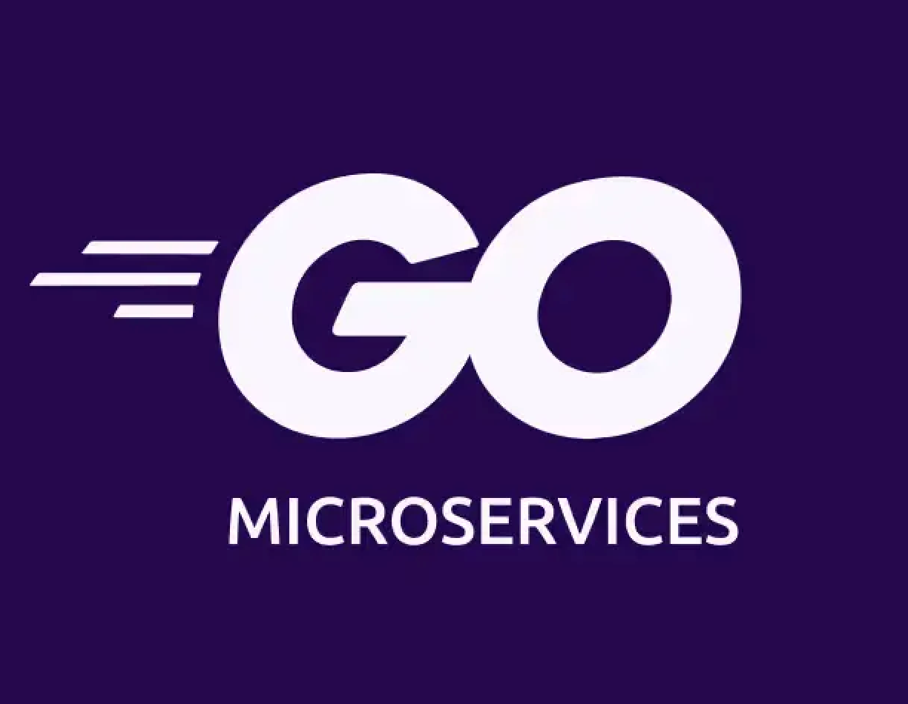
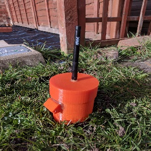
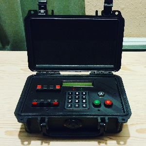
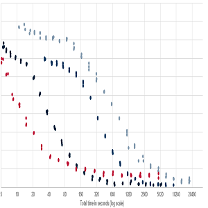
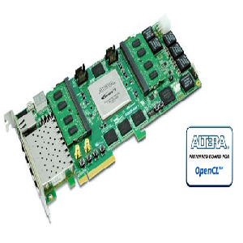
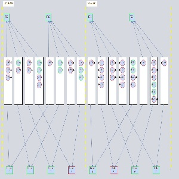
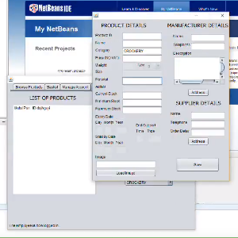
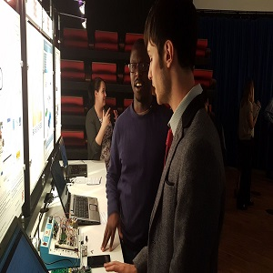
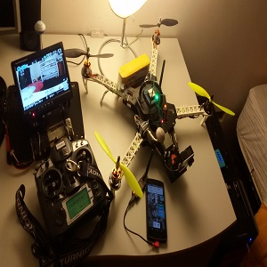
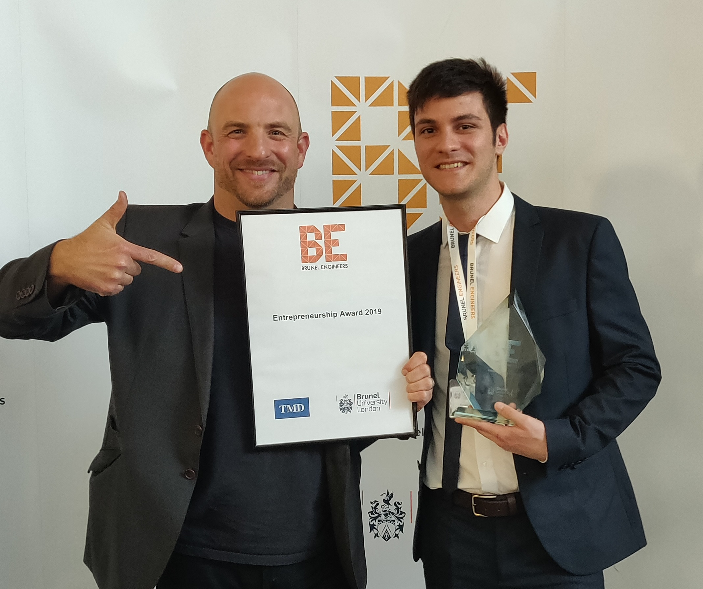

Career Profile
Software Engineer with a wide background (embedded, AI, web, mobile), specialised in web development. Strong knowledge of programming fundamentals, best practise and web architectures. Recent technologies include: Golang, Python, Docker and proficient in others gained through industry roles and personal projects. Skilled in writing efficient and maintainable code. Committed to rigorous documentation standards. Passionate about solving complex challenges.
Work Experience
• Backend role designing and developing microservices written in Golang and Python.
• Developing and maintaning microservices architectures with traceability and security in mind.
• Hardening security with Trivy, SonarCloud and other common backend approaches.
• Implementing tracing and metrics with OpenTelemetry, Grafana and Tempo.
• Designing and implementing CI/CD pipelines, managing version control with BitBucket.
• Ensuring code quality through unit testing, functional testing, mocks and code reviews.
• Advocating for documentation by writing company internal docs and updating code and architecture documents.
• Mentoring junior engineers through pair programming and direct support.
• Collaborating and defining objectives with product owners, frontend and backend engineers.
• Developing and maintaning microservices architectures with traceability and security in mind.
• Hardening security with Trivy, SonarCloud and other common backend approaches.
• Implementing tracing and metrics with OpenTelemetry, Grafana and Tempo.
• Designing and implementing CI/CD pipelines, managing version control with BitBucket.
• Ensuring code quality through unit testing, functional testing, mocks and code reviews.
• Advocating for documentation by writing company internal docs and updating code and architecture documents.
• Mentoring junior engineers through pair programming and direct support.
• Collaborating and defining objectives with product owners, frontend and backend engineers.
- Golang
- Python
- PostgreSQL
- OpenTelemetry
- Grafana
- Kubernetes
- Microservices
- CI/CD
- Linux
Gap Year - Traveling & Relocating
2024 - 2025
 Moving to Italy, Traveling, Studying
Moving to Italy, Traveling, Studying
• Prepare house move from UK to Italy while working part time.
• Solo travel to Asia to explore different cultures and gain new perspectives.
• Studying web development technologies and working on self taught projects.
• Traveled to India, Turkey, Indonesia, Australia, Thailand and Japan.
• Solo travel to Asia to explore different cultures and gain new perspectives.
• Studying web development technologies and working on self taught projects.
• Traveled to India, Turkey, Indonesia, Australia, Thailand and Japan.
• Backend web development role developing a containerised microservice architecture.
• Designing, developing and maintaning microservices written in Golang.
• Enhancing application efficiency through concurrent go-routines and caching.
• Designing and developing new features, database entities, migrations, authentication, event handling.
• Designing, developing, maintaning and migrating legacy PHP code to Golang.
• Orchestrating CI/CD pipelines via Jenkins, managing version control with GitHub.
• Ensuring code quality through unit testing, functional testing, mocks and code reviews.
• Advocating for documentation by maintaining and updating code and architecture documents.
• Mentoring junior engineers through pair programming and direct support.
• Collaborating and defining objectives with product owners, QA, frontend and backend engineers.
• Employing RabbitMQ for robust event handling and smooth communication between microservices.
• Participating in Agile Scrum meetings, sptring planning and utilising Jira for task management.
• Designing, developing and maintaning microservices written in Golang.
• Enhancing application efficiency through concurrent go-routines and caching.
• Designing and developing new features, database entities, migrations, authentication, event handling.
• Designing, developing, maintaning and migrating legacy PHP code to Golang.
• Orchestrating CI/CD pipelines via Jenkins, managing version control with GitHub.
• Ensuring code quality through unit testing, functional testing, mocks and code reviews.
• Advocating for documentation by maintaining and updating code and architecture documents.
• Mentoring junior engineers through pair programming and direct support.
• Collaborating and defining objectives with product owners, QA, frontend and backend engineers.
• Employing RabbitMQ for robust event handling and smooth communication between microservices.
• Participating in Agile Scrum meetings, sptring planning and utilising Jira for task management.
- Golang
- PHP
- PostgreSQL
- RabbitMQ
- REST
- Docker
- Microservices
- Elasticsearch
- DDD
- CI/CD
- Linux
• Full stack web development role based on the Odoo framework (MVC approach).
• Developing and maintaining new features, fixing bugs and migrating legacy functionality.
• Writing from scratch the software documentation, common procedures and how to's.
• Ensuring code quality through unit testing, functional testing and code reviews.
• Enhancing QA capabilities by improving the in-house QA Selinium test framework.
• Orchestrating CI/CD pipelines via Jenkins, managing version control with GitHub.
• Participating in Agile Scrum meetings, sptring planning and utilising Jira for task management.
• Developing and maintaining new features, fixing bugs and migrating legacy functionality.
• Writing from scratch the software documentation, common procedures and how to's.
• Ensuring code quality through unit testing, functional testing and code reviews.
• Enhancing QA capabilities by improving the in-house QA Selinium test framework.
• Orchestrating CI/CD pipelines via Jenkins, managing version control with GitHub.
• Participating in Agile Scrum meetings, sptring planning and utilising Jira for task management.
- Python
- Javascript
- PostgreSQL
- Odoo
- Kafka
- Selenium
- Docker
- TDD
- MVC
- CI/CD
- Linux
• Development of a neural network engine software for embedded and mobile platforms.
• Development of Android Apps, web services, and low level Linux libraries for different architectures.
• Developing and maintaining CMake style library builder for different architectures.
• Developing demo software by capturing functional and non functional requirements during client meetings.
• Responsible for the development and integration of a demo on a Qualcomm experimental device by developing a custom version of the Android operating system and a custom Android demo app.
• Pre and post sale customer support for integration on their platform solutions.
• Looked after AWS infrastructure maintenance and GDPR compliance.
• Development of Android Apps, web services, and low level Linux libraries for different architectures.
• Developing and maintaining CMake style library builder for different architectures.
• Developing demo software by capturing functional and non functional requirements during client meetings.
• Responsible for the development and integration of a demo on a Qualcomm experimental device by developing a custom version of the Android operating system and a custom Android demo app.
• Pre and post sale customer support for integration on their platform solutions.
• Looked after AWS infrastructure maintenance and GDPR compliance.
- C/C++
- Java
- Python
- AWS
- Flask
- PostgreSQL
- Linux
- Client Facing
- Android
• Intel sponsored projects, worked within a small team, with focus on the research and
development of an intelligent algorithm for Transportation Network optimisation.
• Presented project results in Arizona at Intel facility.
• Extensive use of C++, C, C#, Java, OpenCL and CUDA languages.
• Worked on high parallelism approaches maximising use of Intel Xeon and AMD Threadripper CPUs.
• Presented a on meetings to the client regarding current development strategies and results.
• Extensive academic research of optimisation algorithms in the computer science literature.
• Presented project results in Arizona at Intel facility.
• Extensive use of C++, C, C#, Java, OpenCL and CUDA languages.
• Worked on high parallelism approaches maximising use of Intel Xeon and AMD Threadripper CPUs.
• Presented a on meetings to the client regarding current development strategies and results.
• Extensive academic research of optimisation algorithms in the computer science literature.
- C/C++
- C#
- Java
- Cuda
- OpenCL
- Academic Research
- Client Facing
• Responbile for customer service and promotion of products.
• Managing e-mails and phone calls with suppliers.
• Delivery of products to customer’s home.
• Cashier and stock controller
• Managing e-mails and phone calls with suppliers.
• Delivery of products to customer’s home.
• Cashier and stock controller
Skills
- Golang
- Python
- Java
- PHP
- SQL
- PostgreSQL
- MongoDB
- Docker
- Terraform
- Kubernetes
- Microservices
- Authentication
- Client Facing
- Event-Messaging
- AWS
- ElasticSearch
- RabbitMQ
- Git
- Linux
- Javascript
- HTML
- CSS
- AI
- C/C++
- C#
- Android Apps
Open Source Contributions
Projects
Fun Project - gRPC Microservice in Golang
(Link)
The main goal of this project is to write a small gRPC microservice that implements protocol buffer definitions for a dating app. These definitions are used by a service called explorer which is used to return data for decisions made by the users. When a user likes another user a 'decision' is made. These decisions can be overwritten too.
The main goal of this project is to write a small gRPC microservice that implements protocol buffer definitions for a dating app. These definitions are used by a service called explorer which is used to return data for decisions made by the users. When a user likes another user a 'decision' is made. These decisions can be overwritten too.
- Golang
- Docker
- gRPC
- DDD
- Microservices

Personal Project - Containerised Microservice architecture
in Golang
(Link On Request)
Personal project to demonstrate skills developing in Golang a microservice using a DDD framework, RESTful APIs, GraphQL queries, JWT authentication, GORM (ORM) for CRUD operations in a PostgreSQL database. Both a Docker Compose and a Kubernetes architecture are implemented to showcase container orchestration.
Personal project to demonstrate skills developing in Golang a microservice using a DDD framework, RESTful APIs, GraphQL queries, JWT authentication, GORM (ORM) for CRUD operations in a PostgreSQL database. Both a Docker Compose and a Kubernetes architecture are implemented to showcase container orchestration.
- Golang
- Docker
- Kubernetes
- GraphQL
- REST
- Postgres
- DDD
- Microservices
- Authentication
- ORM
Audio Analytic - Qualcomm Sensing Hub Low Power
Integration
(Article
Link)
Responsible for the integration of Audio Analytic's ai3-nano™ software on Qualcomm Snapdragon 8885G SoC. Development of a custom version of Android OS and an Android app to showcase AudioAnalytics software on Qualcomm's chipset. Successfully obtained pre-certification from Qualcomm
Responsible for the integration of Audio Analytic's ai3-nano™ software on Qualcomm Snapdragon 8885G SoC. Development of a custom version of Android OS and an Android app to showcase AudioAnalytics software on Qualcomm's chipset. Successfully obtained pre-certification from Qualcomm
- C
- Android
- Java
- Linux
- DSP
- Embedded

Dissertation Project - IoT Soil Monitoring System
(Project Link - Reuters Article Link - University Article Link)
• A power efficient and wireless array of sensor nodes for the monitoring of an agricultural field.
• Implemented a cloud platform for storage and visualization of the data.
• Implemented Neural Network Virtual Sensing approach for forecasting of soil temperatures.
• Achieved 12 months of battery life at 1h samplying frequency.
• Implemented an Android application for the visualisation and management of the nodes.
• Designed a PCB and a 3D enclosure.
(Project Link - Reuters Article Link - University Article Link)
• A power efficient and wireless array of sensor nodes for the monitoring of an agricultural field.
• Implemented a cloud platform for storage and visualization of the data.
• Implemented Neural Network Virtual Sensing approach for forecasting of soil temperatures.
• Achieved 12 months of battery life at 1h samplying frequency.
• Implemented an Android application for the visualisation and management of the nodes.
• Designed a PCB and a 3D enclosure.
- HTML
- Javascript
- CSS
- PHP
- SQL
- C
- Java
- Python
- Android
- AI
- Atmel
- IoT
- PCB

Personal Project - Design of an Airsoft Prop
• Personal project based on the design and production of an Airsoft device to enrich gameplay.
• Self-taught: microcontrollers, Proteus 8 simulation, PCB design, 3D printing and modelling.
• Developed a wordpress website for the advertising and selling of the product.
• Sold 10 copies and explored how to balance features vs cost based on market research and feedback.
• Personal project based on the design and production of an Airsoft device to enrich gameplay.
• Self-taught: microcontrollers, Proteus 8 simulation, PCB design, 3D printing and modelling.
• Developed a wordpress website for the advertising and selling of the product.
• Sold 10 copies and explored how to balance features vs cost based on market research and feedback.
- C
- PicMicro
- Wordpress
- Software/Hardware Design
- 3D Printing
- Marketing
- Entrepreneur

Assistant Researcher - Evolutionary Strategy (ES) Novel
Implementation
• Project focused on the development of an ES algorithm to replace Ant Colony Optimisation (ACO) in C++ for Transportation Network Optimization.
• Managed to develop a novel implementation of ES that performed faster than ACO thanks to the use of massive multithreading and better combinatorial exploration.
• Novel ES implementation demonstrated better objective results that ACO did not prove to achieve yet.
• Project focused on the development of an ES algorithm to replace Ant Colony Optimisation (ACO) in C++ for Transportation Network Optimization.
• Managed to develop a novel implementation of ES that performed faster than ACO thanks to the use of massive multithreading and better combinatorial exploration.
• Novel ES implementation demonstrated better objective results that ACO did not prove to achieve yet.
- C++
- Optimisation Algorithms
- Multi Threading

Assistant Researcher - FPGA ACO Parallel OpenCL
Implementation
• Project focused on the adaptation of an ES algorithm for implementation on FPGA.
• Managed to develop a novel implementation of ES for FPGA that formed the basis for further research and development.
• Project focused on the adaptation of an ES algorithm for implementation on FPGA.
• Managed to develop a novel implementation of ES for FPGA that formed the basis for further research and development.
- C++
- FPGA
- Optimisation Algorithms

Assistant Researcher - Visualization of Complex Data
Problem
• Desktop Java application for the visualisation of complex data relationships.
• Focused on the visualization complex scheduling task solutions produced by an optimisation algorithm.
• Successfully developed an effective interactive visualization strategy that could analyse, compare different solutions and provide key analysis information for the developer and the user.
• Desktop Java application for the visualisation of complex data relationships.
• Focused on the visualization complex scheduling task solutions produced by an optimisation algorithm.
• Successfully developed an effective interactive visualization strategy that could analyse, compare different solutions and provide key analysis information for the developer and the user.
- Java
- Visualisation
- Graph Theory

Brunel University - Banking and Supermarket Software
(Watch
Video)
• Design and implementation of a banking and supermarket software in Java for the purpose
of managing accounts and buying products using a bank account from the banking software.
• Communication between the two software by means of a TCP socket.
• Successfully learned and reinforced OOP principles, Java Generics, Factory Templates and others.
• Design and implementation of a banking and supermarket software in Java for the purpose
of managing accounts and buying products using a bank account from the banking software.
• Communication between the two software by means of a TCP socket.
• Successfully learned and reinforced OOP principles, Java Generics, Factory Templates and others.
- Java
- Java Generics
- Java Factory Templates

Brunel University - Measuring Bicycling
Performances
• A group project focused on the development of a device for the measure of the speed, inclination, gear ratio and pressure exerted on the pedals of a bicycle.
• Successfully collaborated with the team by helping with the development of the sensors and the software for the PicMicrocontroller in C, a Java app for the computer and an Android app for the streaming and control of the data.
• Project exhibited at Brunel Engineers Showcase 2017.
• Cloud capabilities implemented using Power BI Cloud.
• A group project focused on the development of a device for the measure of the speed, inclination, gear ratio and pressure exerted on the pedals of a bicycle.
• Successfully collaborated with the team by helping with the development of the sensors and the software for the PicMicrocontroller in C, a Java app for the computer and an Android app for the streaming and control of the data.
• Project exhibited at Brunel Engineers Showcase 2017.
• Cloud capabilities implemented using Power BI Cloud.
- C
- Java
- Software/Hardware Design
- PicMicro
- PowerBI
- Android App

Personal Project - Design of a QuadCopter
• Personal project based on the design and implementation of a quadcopter for video recording and aerobatic flight.
• Achieved 30 minutes of flight with a stable motor response.
• Quadcopter controlled and monitored via Android app.
• Video feed streamed on a remote display and also camera recorded.
• Inspired me to learn more about electronics, embedded hardware and motor control.
• Personal project based on the design and implementation of a quadcopter for video recording and aerobatic flight.
• Achieved 30 minutes of flight with a stable motor response.
• Quadcopter controlled and monitored via Android app.
• Video feed streamed on a remote display and also camera recorded.
• Inspired me to learn more about electronics, embedded hardware and motor control.
Minor Projects
Awards

Brunel Engineers Entrepreneurship Award 2019
Award given during Brunel Engineers Showcase 2019 where the best engineering projects developed that year were displayed. My final year dissertation project (IoT Soil Monitoring System) was selected to be presented at the show and it was awarded by a guest from the industry (TMD group) because the project was deemed to have an outstanding business potential with prospects of creating wealth or growth on an individual group or at a societal level.
Award given during Brunel Engineers Showcase 2019 where the best engineering projects developed that year were displayed. My final year dissertation project (IoT Soil Monitoring System) was selected to be presented at the show and it was awarded by a guest from the industry (TMD group) because the project was deemed to have an outstanding business potential with prospects of creating wealth or growth on an individual group or at a societal level.
References
Written 11/01/2024 - Vlad was closely working with Lorenzo.
Working with Lorenzo, a talented Software Engineer, has been a remarkable experience. His dedication to mastering his craft is evident in the way he immerses himself in every aspect of his role. Lorenzo's attention to detail stands out distinctly, ensuring that every project he touches is executed with precision and care.
One of the most impressive traits of Lorenzo is his eagerness to learn and evolve. He isn't hesitant to ask insightful questions, demonstrating a genuine commitment to understanding and growth. This quality not only accelerated his professional development but also contributed significantly to our team's knowledge base.
Lorenzo's quick adaptation to new technologies and his active participation in the discovery phase have been invaluable. He consistently brought fresh perspectives and ideas to our squad discussions, showcasing his ability to think critically and creatively. His journey of evolving from a curious learner to a proficient expert in a short span is commendable. Lorenzo's journey within our team has been really good, and his capacity to grow and adapt makes him a valuable asset to any organization.
Written 16/08/2021 - was directly managing Lorenzo.
Working with Lorenzo, a talented Software Engineer, has been a remarkable experience. His dedication to mastering his craft is evident in the way he immerses himself in every aspect of his role. Lorenzo's attention to detail stands out distinctly, ensuring that every project he touches is executed with precision and care.
One of the most impressive traits of Lorenzo is his eagerness to learn and evolve. He isn't hesitant to ask insightful questions, demonstrating a genuine commitment to understanding and growth. This quality not only accelerated his professional development but also contributed significantly to our team's knowledge base.
Lorenzo's quick adaptation to new technologies and his active participation in the discovery phase have been invaluable. He consistently brought fresh perspectives and ideas to our squad discussions, showcasing his ability to think critically and creatively. His journey of evolving from a curious learner to a proficient expert in a short span is commendable. Lorenzo's journey within our team has been really good, and his capacity to grow and adapt makes him a valuable asset to any organization.